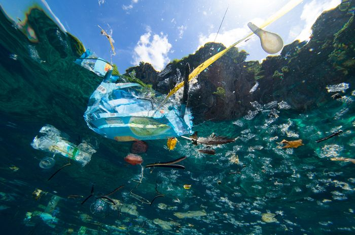

ㅤㅤMenurut kelompok kami, kegiatan IL yang sudah kami jalani bersama-sama berakhir sukses. Hal ini mungkin terjadi karena kerja sama kelompok dan kemauan setiap anggota untuk mendapatkan hasil yang maksimal. Tentu saja kesuksesan sebuah bazar itu tergantung dari produk yang berhasil terjual, dan kabar baiknya kami berhasil menjual semua produk kami. Produk yang kami jual juga beragam, mulai dari makanan, minuman, sampai dengan aksesoris. Setiap produk yang kami jual sudah direncanakan secara matang mulai dari produknya sendiri sampai dengan pengemasannya.
ㅤㅤUntuk kemasannya, kami berusaha semaksimal mungkin untuk tidak menggunakan plastik. Hal ini didukung dengan banyaknya sampah plastik yang berserakan dimana-mana yang dapat merusak bumi ciptaan Tuhan. kami juga mencoba untuk menghindari terseraknya sampah plastik di lingkungan bazar kami yaitu disekolah, sehingga sekolah tetap bersih dan nyaman.


ㅤㅤProduk-produk yang membutuhkan kemasan seperti teh, kami gunakan kemasan kaca. Meskipun kaca harganya jauh lebih mahal daripada plastik, kami tidak menyesal karena kami melakukannya dalam restorasi kesembuhan bumi ciptaan Tuhan. Meskipun begitu kami menggunakan plastik untuk membungkus cookies yang kami jual, karena berkaitan dengan kualitas produk kami, agar makanan tersebut tidak mudah rusak.
ㅤㅤSelain itu produk yang kami resell seperti jedai ada yang sudah terbungkus plastik sejak dikirimkan dari penjualnya. Hal itu dapat teratasi karena untuk cookies sudah disediakan box sehingga tidak perlu langsung dibuang, dan para konsumen juga lebih banyak menggunakan produk tersebut dirumah. Untuk jedai hanya 2-3 produk yang dilapisi plastik dan tidak kami buka karena untuk memberikan kepercayaan kepada para konsumen bahwa itu adalah barang baru, dan jedai pun tidak langsung dibuka di sekolah karena sekolah juga tidak mengusulkan anak-anak menggunakan jedai karena akan terlihat tidak rapi.
ㅤㅤSelain kedua produk tersebut kami pastikan kami tidak menggunakan plastik sama sekali. Hal ini kami lakukan karena kecintaan kami kepada bumi ini yang perlahan telah dirusakan oleh manusia. Gerakan kecil seperti ini pun juga dapat berdampak besar bagi bumi ini.
ㅤㅤKeadaan Alam di Indonesia sangat menurun terutama karena pemanasan global dan juga hutan-hutan yang gundul. tidak hanya itu di Indonesia juga ada pencemaran air dan juga tanah. Di Jakarta sudah menjadi salah satu kota yang memiliki polusi udara yang paling tinggi, Hal ini dapat kita rasakan sendiri dengan suhu di Jakarta yang semakin meningkat. Suhu Jakarta bahkan mencapai 36 C karena pemanasan global yang juga semakin menggila. Banyaknya kerusakan lingkungan, keseimbangan menjadi terganggu dan hutan-hutan rusak. Area hutan terus semakin menyempit sedangkan jumlah gas karbon yang justru terus meningkat. Gas karbon yang lama-kelamaan tidak terkendali membentuk payung yang menahan panas matahari, yang mengurung kita dalam rumah kaca yang semakin lama semakin panas. Karena suhu yang sangat panas tumbuhan yang ada di hutan juga semakin kering yang membuatnya semakin rawan untuk kebakaran.
|  |
Plastik telah menjadi hal yang sulit untuk dilepaskan di hidup kita. Kita menggunakan plastik setiap hari, tanpa memikirkan dampaknya kepada bumi. Pada tahun 2015, diperkirakan 55 persen sampah plastik global dibuang, 25 persen dibakar, dan 20 persen didaur ulang. Banyak sampah plastik berakhir di lautan. Tetapi hal tersebut sangat berbahaya terhadap laut bumi. Dampak paling nyata dari sampah plastik adalah tertelannya, mati lemas, dan terjeratnya ratusan spesies laut. Satwa liar laut seperti burung laut, paus, ikan, dan penyu salah mengira sampah plastik sebagai mangsa; sebagian besar kemudian mati kelaparan karena perut mereka dipenuhi plastik. Penyebab dari sampah plastik yang jumlahnya sangat besar adalah penggunaan produk plastik kemasan, limbah rumah tangga maupun industri yang terus terbentuk dalam jumlah besar secara berulang |
|
Penggundulan hutan juga menjadi masalah bagi bumi kita. Hutan memberi kita oksigen, tempat berlindung, pekerjaan, air, makanan dan bahan bakar. Dengan banyaknya masyarakat yang bergantung pada hutan, nasib hutan bisa jadi menentukan nasib kita sendiri. Tetapi, banyak sekali hutan yang pohon-pohonnya ditebang tanpa izin. Ini terjadi karena ada penebangan liar, tuntutan-tuntutan yang harus dipenuhi karena banyaknya populasi, kebakaran hutan, dan banyak lagi. Selain penebangan liar, penebangan liar, hutan gundul juga disebabkan oleh faktor alam, yakni iklim dan cuaca. Penyebab deforestasi di Indonesia mayoritas berasal dari aktivitas manusia seperti pembakaran hutan, pembukaan lahan, penebangan pohon ilegal dan tidak terstruktur serta pemanfaatan area hutan untuk pertambangan, pengeboran minyak dan pemukiman. |
|
Pencemaran udara merupakan pelepasan sejumlah gas, benda padat dan terbelah halus ke atmosfer dan tersebar melebihi kapasitas alami lingkungan untuk menyerapnya. Polusi disebabkan karena partikel padat, cair serta gas tertentu dan tersuspensi dalam udara. Partikel ini disebut dengan aerosol. Partikel ini bisa berasal dari berbagai macam sumber. Tidak sedikit aerosol yang masuk dalam atmosfer saat aktivitas pembakaran bahan bakar fosil seperti batu bara, minyak bumi hingga kayu. Hal ini menyebabkan udara menjadi tercampur dengan zat-zat yang tidak aman bagi makhluk hidup. Manusia menjadi rentan terhadap penyakit yang disebabkan oleh udara yang tercemar. Penyebab pencemaran udara dari faktor alam adalah aktivitas gunung berapi yang mengeluarkan abu dan gas vulkanik, kebakaran hutan, dan kegiatan mikroorganisme. Sedangkan penyebab pencemaran udara dari faktor manusia adalah pembakaran, proses peleburan, pertambangan dan penggalian, proses pengolahan dan pemanasan, pembuangan limbah, proses kimia, proses pembangunan, dan proses percobaan atom atau nuklir; Polutan yang dihasilkan terutama adalah gas dan debu radioaktif. |
|
Sejak awal dunia dijadikan, Tuhan memberi kepercayaan kepada manusia untuk menjaga dan melestarikan alam. Tuhan memberitahu manusia untuk merawat, menguasai, dan mengembangkan alam di Bumi ini. Seperti yang difirmankan oleh Tuhan, “Beranakcuculah dan bertambah banyak, penuhilah bumi dan taklukkanlah itu, berkuasalah atas ikan-ikan di laut dan burung-burung di udara dan atas segala binatang yang merayap di bumi” (Kejadian 1:28). Tuhan menghendaki umat-Nya untuk menguasai dan memanfaatkan seluruh kekayaan alam yang telah diciptakan-Nya. Namun perintah tersebut bukanlah penugasan untuk menghancurkan lingkungan hidup dan ciptaan lain [Paus Yohanes XXIII, Mater et Magistra no. 196-197] “Sebaliknya, alam itu harus diabdikan kepada hidup manusia” [ Paus Yohanes XXIII, Mater et Magistra no. 197]. Dengan demikian secara eksplisit Gereja Katolik, melalui dokumen ini, mengajarkan agar lingkungan hidup dan seluruh ciptaan ditata dan dirawat. |

|
|
Karena kita telah diberikan kebebasan untuk memanfaatkan alam ciptaan-Nya, kita harus memanfaatkannya dengan baik dan tetap memelihara dan melestarikan alam ciptaan-Nya. Tuhan juga berfirman dalam Kitab Mazmur 107:33-34, “Dibuat-Nya sungai-sungai menjadi padang gurun, dan pancaran-pancaran air menjadi tanah yang gersang, tanah yang subur menjadi padang asin, oleh sebab kejahatan orang-orang yang diam di dalamnya”. Tuhan kembali menegaskan bahwa penguasaan atas seluruh ciptaan-Nya tidak bersifat semena-mena dan tidak bertanggung jawab. Manusia diharapkan menguasai seluruh makhluk ciptaan Tuhan ini dengan penuh perhatian dan penuh kasih. |
|
Selain itu, terdapat ensiklik Sollicitudo Rei Socialis, dimana Paus menekankan tiga hal yang berguna direnungkan sehubungan dengan alam [Paus Yohanes Paulus II, Sollicitudo Rei Socialis no. 34]. Pertama, manusia harus memperhitungkan hubungan timbal balik setiap makhluk, sehingga manusia tidak boleh menggunakan unsur-unsur alamiah semata-mata demi pemenuhan kebutuhan ekonomis. Kedua, manusia harus memperhatikan bahwa sumber-sumber alamiah bisa ada yang terbatas dan tidak dapat diperbaharui. Ketiga, manusia harus mempertimbangkan akibat-akibat dari perkembangan industri yang dapat mencemari dan memengaruhi alam lingkungan. |
Saya dan kelompok saya semua dapat bekerja sama dengan sangat baik dan juga berusaha untuk selalu menerapkan nilai nilai persatuan didalamnya. Mulai dari kita awal bekerja sama sampai saat ini, walaupun awal-awal kita tidak terlalu kenal dan dekat satu dengan yang lain, kami terus berusaha untuk mengenal dan mendekatkan diri satu dengan yang lain sampai akhirnya kita bisa dekat satu dengan yang lain dan bekerjasama dengan baik. Dari awal dibentuknya kelompok ini dan memulai perencanaan perencanaan untuk bazar dan tugas tugas lainnya, saya dan kelompok saya bisa membagi tugas dan mengerjakan tugasnya masing masing dengan baik. Saya dan kelompok saya tidak hanya membagi tugas dan mengerjakannya tetapi kita juga terus memberikan semacam update progress kita masing masing agar anggota kelompok lain bisa memberikan ide dan juga tanggapan. Ketika kami memiliki kesulitan, kami selalu berusaha untuk berkomunikasi satu dengan yang lainnya agar bisa menemukan dan mendiskusikan solusi yang tepat. Persatuan tentunya sangat penting dalam kerjasama. Persatuan pastinya sangat amat membantu kelancaran dalam kerjasama. Hal ini cukup kami rasakan di dalam kelompok. Persatuan di kelompok kami sangat berpengaruh terutama dalam hal perselisihan dan miskomunikasi. Kelompok kami sangat minim adanya perselisihan maupun miskomunikasi, sehingga kerjasama kami bisa berjalan dengan lancar. Ketika terjadi miskomunikasi-pun kami berusaha untuk meluruskan dan menjelaskannya. Setiap anggota kelompok tentunya mempunyai perannya masing masing, begitu juga dengan saya. Peran saya dalam kelompok ini adalah memberikan ide ide untuk desain post Instagram, mendesain logo toko Khione, membuat cookie kit dan juga crystal jelly, dan juga membantu mengedit video video promosi maupun tugas. Walau begitu saya tentunya tetap bertanya dan meminta kepada anggota kelompok saya untuk memberikan tanggapan, dan ketika saya melakukan kesalahan, saya akan berusaha mencari solusi untuk menyelesaikan masalah tersebut.
ㅤㅤMulai dari perencanaan, pelaksanaan, sampai pembuatan laporan, kelompok saya dapat
bekerja sama dengan baik dan menjunjung nilai persatuan. Dari perencanaan, kelompok saya dapat membagi
tugas dengan baik dan kami mengerjakan bagian masing-masing dengan sungguh-sungguh dan bertanggung
jawab. Kami juga tetap memantau pembagian pekerjaan satu sama lain agar tetap bisa saling membantu atau
menambahkan. Meskipun kami mengerjakan bagian kami masing-masing, secara keseluruhan, semua bagian kami
dikerjakan bersama sambil menyatukan pendapat dan ide-ide kami. Persatuan tentu saja sangat penting.
Persatuan mendukung komunikasi dan kerja sama yang baik. Dengan komunikasi yang baik, diskusi pun dapat
berjalan dengan baik dan mengurangi terjadinya miskomunikasi. Setelah saya perhatikan juga selama
pengerjaan IL ini dari awal sampai akhir, hampir tidak ada miskomunikasi sama sekali.
ㅤㅤBeberapa peran saya dalam kelompok adalah memberi ide produk dan desain katalog. mengatur desain untuk
post di Instagram. Menghitung dan menentukan harga produk, membuat tabel dan sistem perhitungan di
google sheets, menjadi kasir meski akhirnya kami semua menjadi kasir saat hari-H bazar. Saya mengambil
bagian dalam pembuatan yogurt, desain tote bag “Sancta Ursula”, dan penyusunan manik-manik untuk
gantungan kunci. Saya juga membuat website untuk laporan akhir ini. Namun berkat adanya persatuan dan
kerja sama yang sangat baik di kelompok saya, saya merasa sangat terbantu. Saya bisa dengan mudah diberi
solusi oleh anggota yang lain agar bisa mengerjakan tugas-tugas IL dengan maksimal. Saya mengerjakan
tugas-tugas yang menjadi tanggung jawab saya dengan sungguh-sungguh agar memberi hasil yang baik bagi
kelompok saya. Semua teman dalam kelompok saya juga telah bertanggung jawab dalam mengerjakan tugas
mereka. Karena kami semua mengambil tugas dengan serius dan sungguh-sungguh, tugas dapat berjalan dengan
baik dan memberi hasil yang lumayan memuaskan.
ㅤㅤMeski dari awal saya tidak terlalu kenal atau bahkan baru kenal dengan beberapa anggota kelompok saya,
kami bisa menjaga komunikasi yang baik dan juga membangun sebuah ikatan pertemanan. Cara kami membangun
kerja sama dengan baik adalah dengan cara berkomunikasi dengan jelas dan membagi tugas dengan adil. Kami
juga berusaha memahami tugas-tugas yang kami miliki. Misalnya saat tugas kelompok yang harus kami
kerjakan di rumah satu sama lain atau melalui google meet. Kami mengatur jadwal pengerjaan tugas
berdasarkan jadwal sehari-hari kami juga. Karena tentu saja kami memiliki les dan kegiatan lainnya.
Persatuan dan pemahaman akan satu sama lain telah membawa banyak dampak positif. Saya merasa kelompok IL
saya merupakan salah satu kerja kelompok paling efektif dan semua anggota dapat berkontribusi dengan
sangat baik. Tidak hanya mempermudah pekerjaan, namun juga membuat suasana lebih menyenangkan. Saya jadi
tidak terlalu “terbebani” karena tugas melainkan jadi lebih bersemangat dengan dukungan teman-teman
sekelompok saya.
ㅤㅤPada proses pelaksanaan IL, saya berada di kelompok 6 bersama dengan Kinga, Gaby,
dan Tere. Pada awalnya saya tidak kenal dan tidak terlalu dekat dengan mereka. Tetapi seiringnya waktu
berjalan kami menjadi lebih akrab dan dapat menjalin kerja sama yang baik. Mulai dari perencanaan
dasar dari toko kami seperti perencanaan nama, logo, produk, slogan, dan lainnya, kami sudah dapat
bekerja sama dengan baik. Tetapi, waktu awal kegiatan IL ini, sekolah juga sedang melakukan pentas seni
165 tahun sekolah, dan kebetulan seluruh anggota kelompok saya terlibat aktif dalam pentas seni
tersebut. Maka dari itu, terpaksa kami agak terlambat dalam proses daripada kelompok lain. Tetapi,
pada akhirnya kami dapat mengejar ketertinggalan dari kelompok kami dan akhirnya dapat mengikuti
alur atau jadwal dari semua kelompok lain.
ㅤㅤMeskipun kami sibuk dengan kegiatan kami, kami tetap dapat saling menghargai dan tetap dapat
menjalin persatuan yang baik. kami semua mau mendengarkan pendapat dari tiap-tiap anggotanya dan
saling membantu dalam pengerjaan tugas. Contohnya ketika ada yang masih tidak paham dengan cara
menghitung keuntungan produk, kami saling membantu agar tugas dapat terselesaikan dengan baik. Peran
saya dalam kelompok ini adalah menjadi bendahara, saya juga berpartisipasi aktif dalam perencanaan
kegiatan kami mulai dari perencanaan produk sampai ke dekor booth seperti mendekorasi dan membawa pohon natal. Saya juga membantu mengusulkan ide
untuk post di akun sosial media kami. Pada saat bazar saya juga berpartisipasi aktif dalam pembuatan
produk seperti snow chicken dan memarinasinya dari rumah maupun keychain yang kami jual. Setelah bazar selesai saya juga aktif
dalam perhitungan hasil uang kami, karena saya memegang uang hasil transferan dan uang hasil QRIS.
Tapi sayangnya saya kurang aktif dalam pemberian produk PO, dikarenakan waktu pembagian produk PO saya
sedang aktif dalam kegiatan OSIS, sehingga saya hanya bisa memberikan produk PO ke hanya 4 orang saya. Setelah itu saya tetap membantu dalam pengerjaan isi website maupun membantu websitenya dan membantu membuat presentasi kelompok.
Tentu saja tugas saya di kelompok ini juga tidak sedikit, tetapi atas bantuan teman-teman saya,
pekerjaan menjadi lebih mudah dan cepat terselesaikan. Sehingga menurut saya persatuan yang ada di
kelompok kami sangat bagus dan penting dalam keberlangsungan proyek IL kami.
ㅤㅤSelama pengerjaan proyek IL ini, kelompok saya berdinamika dan memiliki rasa
persatuan serta kerja sama yang baik. Meskipun pada awalnya kami sedikit asing, tetapi proyek ini
menumbuhkan rasa persatuan yang kuat di dalam diri kami masing-masing. Dari perencanaan produk sampai
laporan pelaksanaan akhir, kami selalu membantu sesama supaya proyek ini dapat selesai dengan hasil
yang memuaskan. Kami juga tentunya mengalami beberapa kendala. Kami semua terlibat dalam Pentas
Seni 165 tahun, maka ada beberapa saat dimana tidak semua anggota dapat melakukan bagian mereka pada
tugas-tugas tertentu. Namun anggota yang ada selalu bekerja keras untuk memastikan bahwa tidak ada yang
kurang dari tugas-tugas proyek ini.
ㅤㅤMenurut saya, saya memiliki peran yang sangat berkontribusi kepada proyek ini. Saya aktif memberikan
pendapat dan menunjukkan masalah-masalah yang mungkin dapat terjadi di masa depan supaya kelompok saya
dapat menyelesaikan masalah-masalah tersebut. Saya juga membantu membuat desain-desain produk kelompok,
khususnya gantungan kunci, dan saya juga aktif dalam mempromosikan booth kami di sosial media supaya
dapat membangun antisipasi pelanggan. Saya merasa bahwa proyek ini sangat sulit, namun dengan dukungan
dan bantuan anggota, saya merasa bahwa proyek penjualan bazar terselesaikan dengan mudah dan dengan
hasil yang sangat memuaskan. Melalui proyek ini saya menyadari pentingnya persatuan dan kerja sama dalam
kelompok, karena jika kelompok saya ini tidak memiliki dinamika yang baik maka akan timbul banyak
masalah selama pengerjaan proyek ini. Namun saya merasa bahwa kelompok IL saya ini memiliki rasa
persatuan dan kerja sama yang tinggi.
Proyek IL kali ini dapat kami katakan sukses dalam segi keberhasilan proyek dan kerjasama tim. Hal ini didukung dengan keberhasilan kami untuk saling bekerja sama selama proses proyek ini. Contohnya ketika ada salah satu anggota yang kesulitan dalam pengerjaan tugasnya kami saling membantu agar tugas itu dapat dikerjakan dengan baik dan dengan hasil yang maksimal. Selain itu kami semua juga aktif berpartisipasi pada saat diskusi, contohnya ketika penentuan produk. Kami saling memberikan masukan agar produk yang diusulkan dapat disempurnakan sebaik mungkin dengan menggunakan pendapat kami masing-masing. Proyek ini juga mengajarkan kami betapa pentingnya sebuah kerja sama dalam tim. Kerja sama yang sukses dapat dihasilkan dari sikap setiap anggota yang mau bertanggung jawab dan saling menghargai. Pada saat proyek IL berlangsung, kami sedang sibuk dengan kegiatan lain seperti acara pentas seni sekolah, kegiatan OSIS, kegiatan ekstrakurikuler, pelajaran tambahan, dan masih banyak lagi. Tetapi, kami semua tetap saling menghargai dan saling membantu agar tugas yang kami kerjakan dapat terselesaikan dengan baik. Persatuan inilah yang membuat kelompok kami dapat berhasil di proyek IL ini.